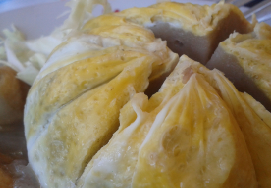

Bakso Kabut
Bicara tentang bakso kabut, kuliner asli Jember, Jawa Timur, tidak bisa terlepas dari sosok Juhairiyah. Perempuan kelahiran Jember, 1 Juli 1975 tersebut merupakan orang yang pertama kali membuat bakso kabut, yakni bakso daging yang dibalut dengan telur.Hingga kini, bakso kabut masih menjadi kuliner favorit bagi masyarakat Jember. Juhairiyah mengatakan bahwa bakso kabut pertama kali digagas oleh dirinya pada 2007 silam.
Juhairiyah menceritakan bahwa ide bakso kabut muncul setelah penghasilan dari usaha jualan bakso yang dia tekuni sejak 1996 dirasa sudah tidak lagi mencukupi kebutuhan keluarga.Sementara penghasilan dari sang suami yang saat itu bekerja sebagai buruh bangunan juga belum dapat menutupi kebutuhan keluarga. Dia melanjutkan, sejak kerugian yang terus-menerus dia rasakan tersebut, dirinya tidak lantas putus asa. Juhairiyah terus mencari cara agar bakso dagangannya laku terjual.Juhairiyah mengatakan bahwa inovasi tersebut baru dia temukan saat menghadiri pertemuan warga di tempat tinggalnya.Di dalam pertemuan tersebut warga saling menggagas ide-ide kreatif yang kemudian memicu munculnya gagasan dari benak Juhairiyah untuk usaha baksonya.
Bagi para pecinta kuliner ‘Bakso’ yang kebetulan berkunjung di Kabupaten Jember tidak ada salahnya bila mencoba Bakso Kabut Bu Juhairah. Memang bakso ini memiliki keunikan dan rasa khas yang tidak akan pernah anda temukan di tempat-tempat lainnya, bakso ini merupakan bakso telur, namun berbeda dengan yang lainnya , yang namanya bakso telur biasanya telur berada dalam bakso, kalau yang satu ini baksonya di balut dengan telur.